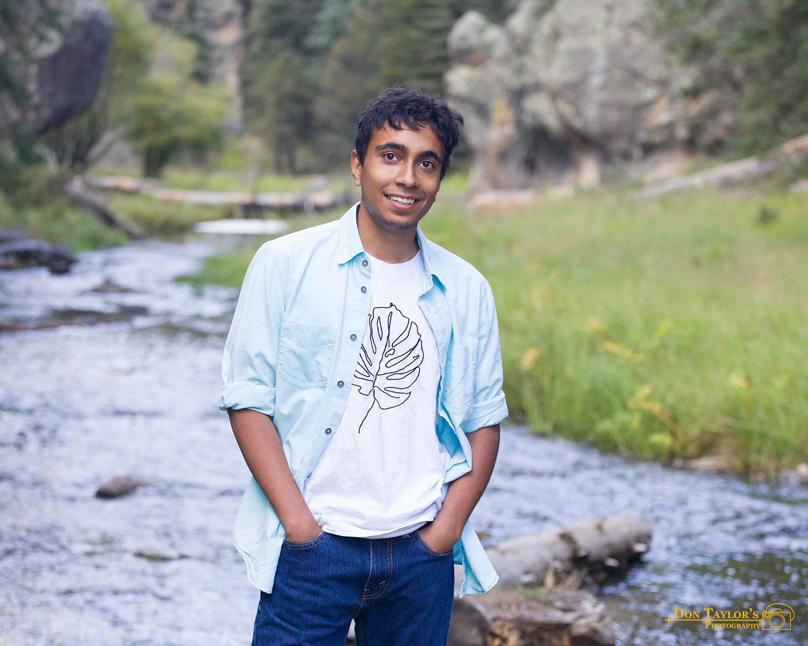

I am an Animation and Storyboarding student passionate about visual storytelling, character development, and bringing ideas to life through animation. I enjoy creating stories, developing storyboards, and exploring ways to communicate emotions and ideas through visuals. Currently I am a rising Junior at New Mexico State University (NMSU) and I have been accepted into the Institute of Creative Media (CMI) to pursue my undergraduate degree. During my time at the CMI program, I have obtained a beginners level of skill in 3D Animation using the software MAYA, and a beginners level of 2D animation/graphic design. I have knowledge of softwares including Photoshop, Clip Studio Paint, ToomBoom, and ZBrush as well. I have a beginner's understanding of Java, and am currently getting a grasp of C and C++. I am interested in working in a professional environment, in the field of creative media, graphic design, and/or Storyboarding.